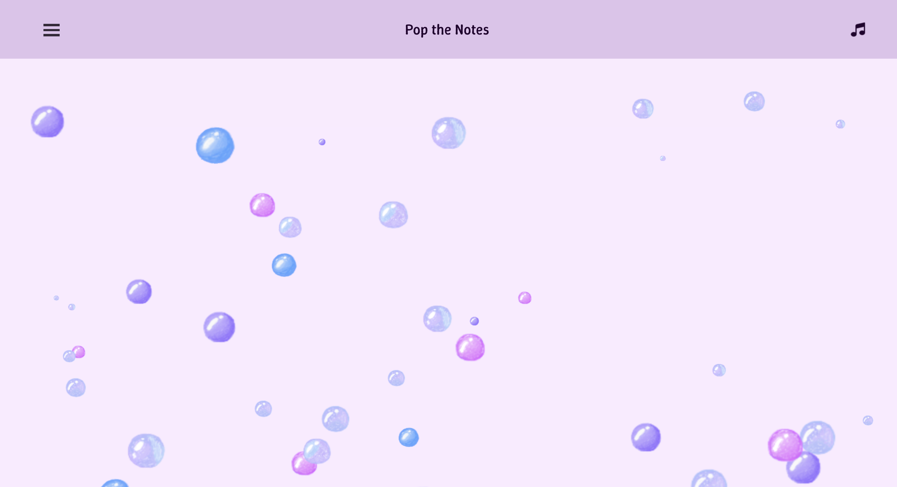
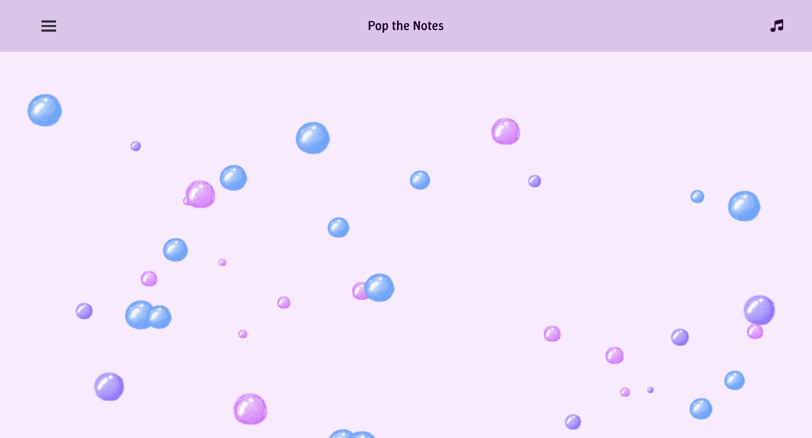
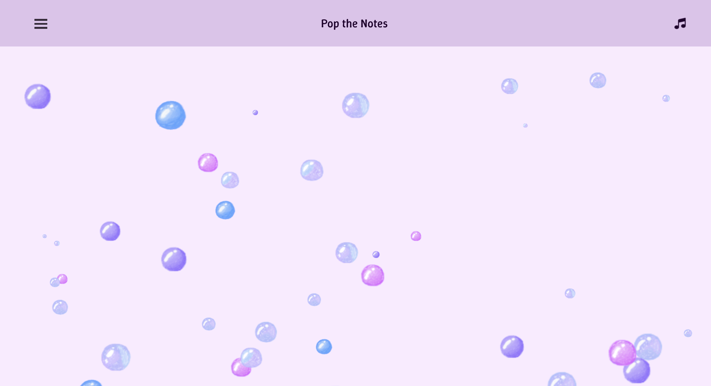
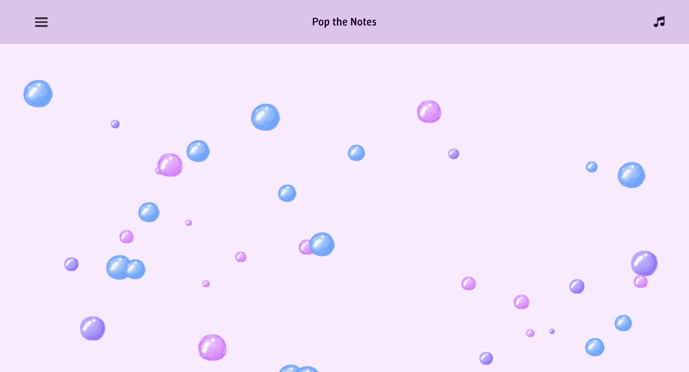
My ideal outcome was to create a decompression website based game where the users can have a soothing and calm experience from simple, relaxing gameplay. My goal was to welcome users by providing them with a minimal, stress-free environment, supported by effective design features. To accomplish that, I used a soft and gentle looping piano music track to reinforce and maintain a soothing atmosphere. I chose to mainly use a purple and pink colour palette to create a dreamy and peaceful visual stimulation. Every element, visual, sonic, and interactive—was carefully designed to maintain the objective of encouraging relaxation and mental ease throughout the experience.
Besides novelty, other important values of my project were emotion, comfort, simplicity, and user interaction. I wanted users to feel decompressed while experiencing the project, interacting without pressure or complexity. The interface was intentionally designed with minimal and intuitive features to reduce cognitive load and promote a sense of ease and engagement. Tone was also a key value; through soothing sounds and soft visuals, the project creates an ambient atmosphere that helps users relax and process their emotions. Overall, these values worked together to support a calm user experience.
I intentionally avoided competitive gameplay elements, such as time constraints or missions, because my goal was to create a decompression website that helps users feel relaxed throughout the experience. Interaction is limited to bubble popping only, allowing users to focus on the simple, satisfying action and the unique sound each bubble makes. Stressful or intense visuals and sounds were deliberately excluded. The bubbles were designed to harmonize with a soft, calming color palette, creating a visually soothing environment. The audio elements were carefully explored and refined to maintain a gentle, ambient tone. Every aspect of the project was guided by a focus on calmness and emotional comfort. I deliberately avoided challenges, achievements, and narrative structures such as background stories or progress tracking to keep the experience unstructured, open-ended, and emotionally healing.
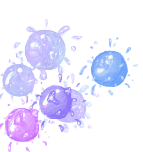 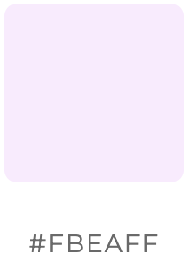 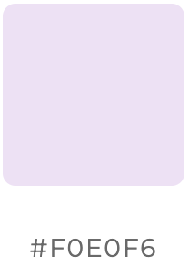 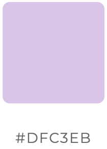 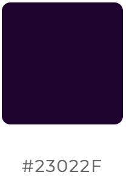My ideal outcome was to create a decompression website based game where the users can have a soothing and calm experience from simple, relaxing gameplay. My goal was to welcome users by providing them with a minimal, stress-free environment, supported by effective design features. To accomplish that, I used a soft and gentle looping piano music track to reinforce and maintain a soothing atmosphere. I chose to mainly use a purple and pink colour palette to create a dreamy and peaceful visual stimulation. Every element, visual, sonic, and interactive—was carefully designed to maintain the objective of encouraging relaxation and mental ease throughout the experience.
For technical considerations, I built the project using HTML, CSS, and JavaScript, as these are the primary programming languages I’ve been learning. An important library I incorporated into the project is Tone.js, which I used to create synthesised sounds for the bubble interactions—an essential part of the user experience. I specifically used the PolySynth instrument from Tone.js, combined with randomness to generate real-time audio feedback each time a bubble is popped.
For the visual elements, I used Procreate to design the different bubble styles and effects. I chose Procreate over software like Photoshop or Illustrator because I’m more familiar with it, and its hand-drawn interface on the iPad allows for greater convenience and fine detail in my illustrations.
I focused on a calm aesthetic and style; therefore, I used a soft colour palette of light purple, pink, and blue. Some bubble designs incorporate all three colours, while others use a single gradient of one hue (purple, pink, or blue). The hand-drawn bubbles create an organic and varied appearance, contributing to a gentle atmosphere by intentionally avoiding high contrast and sharp edges. In terms of appearance, I also incorporated a minimalist design, keeping the interface clean and simple. This reflects the simplicity of the interaction experience and helps reduce visual stress. Another small detail I integrated into the design is the effect that occurs after a bubble pops, making the feedback feel more responsive and fluid.
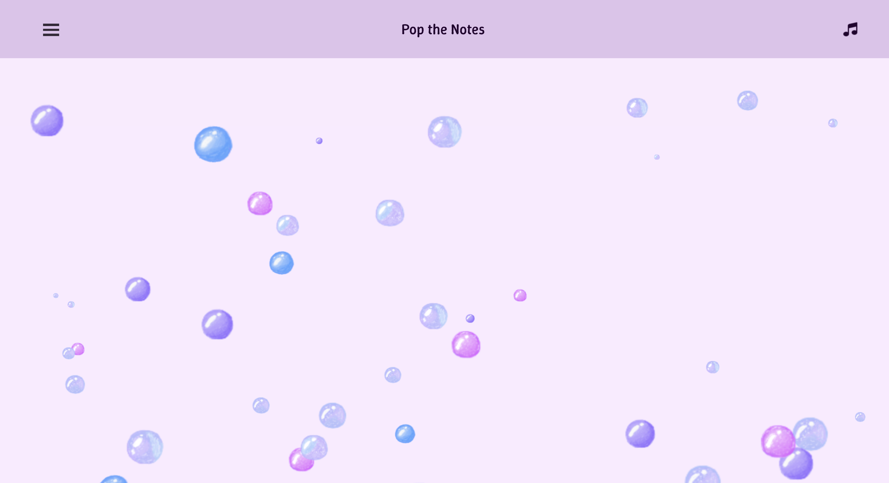
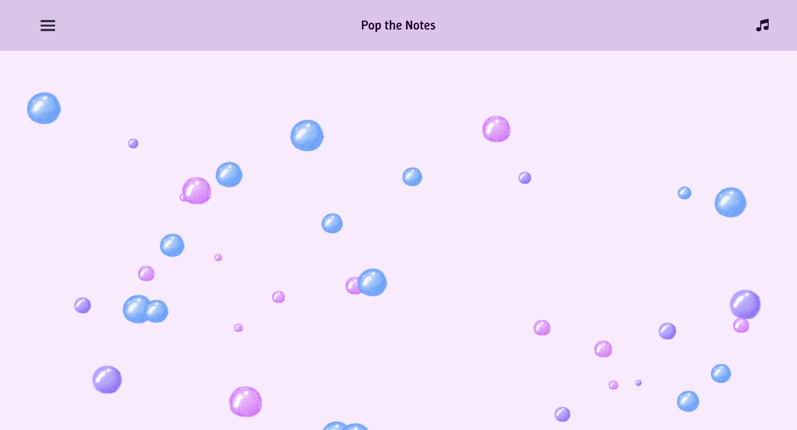
I built the site with Github and Visual Studio Code, using HTML, CSS, and JavaScript to ensure broad compatibility and lightweight performance. For asset creation, I used Procreate, which allowed me to efficiently design the bubbles directly on an iPad, a quick and precise tool for my workflow. For sound synthesis, I integrated Tone.js to generate real-time bubble popping sounds that respond to user interactions. Tone.js is a powerful library that enables random synth generation at different pitches. Among its features, I implemented Poly Synths, a polyphonic analog synthesizer capable of producing short, clean sounds. The randomness in pitch variation adds creativity to the audio feedback and prevents repetition, effectively killing two birds with one stone.
I intentionally designed the interactions to be paced and calming—for example, bubbles are generated at random positions but move at moderate speeds to keep users engaged without causing stress. This design choice supports my overall aim: to create a calm aesthetic and promote a relaxing experience. I also kept the interaction and layout minimal, limiting the user’s input to simply clicking bubbles and maintaining a clean interface to help focus attention on the interaction and reduce cognitive overload. Repetition is another key design element, bubbles vary in size, speed, position, and the synth sounds they trigger, creating a rhythmic flow without making the experience feel monotonous. All visual, audio, and interactive elements are integrated with the same goal in mind: to offer a calm, decompressing experience.
By prioritising minimal navigation, I focused on simplicity in both visuals and audio. Users can immediately interact without needing to read instructions or make any decisions. However, I realise I should have included a pop-up tab when entering the website to inform users that the site will play sounds. There is only one main interaction—clicking the bubbles—which keeps the interface clear and straightforward, reducing complexity and encouraging a calm, playful ambience. I intentionally avoided using menus or layered UI, so every element appears on a single page, without requiring users to navigate through different screens. Each click provides instant audio-visual feedback—a popping synth sound paired with a bubble animation—mimicking the effect of a bubble being popped. I also intentionally excluded any goals, timers, or missions to make the experience open-ended, allowing users to engage at their own pace, free from pressure. Users are welcomed into a soft and comfortable environment with no specific aim; they can simply click and enjoy the sounds—whether it's the synths or the background music. Personally, I really enjoyed the background piano soundtrack, as it feels gentle and has a healing effect.